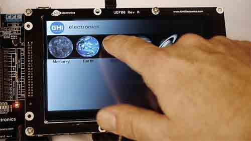

Touch
Introduction
Displays may optionally include a touch sensitive screen to detect user touch input. Touch Screens can be resistive or capacitive.

Resistive Touch
A resistive touch screen measures the resistance across X and Y to determine the touch position. While it is possible to use GPIO and ADC, it is better to use dedicated chips. The only advantage of resistive touch over capacitive is that they work through pressure, meaning you can use it while wearing gloves. But, resistive touch is not very accurate and requires calibration.
Unless you have specific reason to use resistive touch, capacitive touch should be used.
This is a simple example showing how to read a resistive display. A better approach would be to use a resistive touch controller chip that works over SPI/I2C.
private void TouchReader() {
var adc = AdcController.GetDefault();
var gpio = GpioController.GetDefault();
int x, y;
while (this.active) {
// Read X
{
var XR = gpio.OpenPin(this.PinXR);
XR.SetDriveMode(GpioPinDriveMode.Output);
XR.Write(GpioPinValue.High);
var XL = gpio.OpenPin(this.PinXL);
XL.SetDriveMode(GpioPinDriveMode.Output);
XL.Write(GpioPinValue.Low);
var YD = gpio.OpenPin(this.PinYD);
YD.SetDriveMode(GpioPinDriveMode.Input);
var YU = adc.OpenChannel(this.ChannelYUA);
x = (int)(YU.ReadRatio()*1000);
XR.Dispose();
XL.Dispose();
YU.Dispose();
YD.Dispose();
}
// Read Y
{
var YD = gpio.OpenPin(this.PinYD);
YD.SetDriveMode(GpioPinDriveMode.Output);
YD.Write(GpioPinValue.High);
var YU = gpio.OpenPin(this.PinYU);
YU.SetDriveMode(GpioPinDriveMode.Output);
YU.Write(GpioPinValue.Low);
var XR = gpio.OpenPin(this.PinXR);
XR.SetDriveMode(GpioPinDriveMode.Input);
var XL = adc.OpenChannel(this.ChannelXLA);
y = (int)(XL.ReadRatio()*1000);
XR.Dispose();
XL.Dispose();
YU.Dispose();
YD.Dispose();
}
if (x > 50 && y > 50) {
var sx = this.Scale(x, 50, 830, 0, 320);
var sy = this.Scale(y, 150, 830, 0, 240);
this.TouchMove?.Invoke(this, new TouchEventArgs(sx, sy));
}
Thread.Sleep(20);
}
}
Capacitive Touch
Capacitive touch screens are used on most modern devices, including phones. They are very accurate and capable of detecting multiple simultaneous touches.
A special capacitive controller chip must be used to control the touch panel. This chip is usually mounted right on the flat cable going to the touch panel. These chips are usually I2C or SPI, with I2C being more common.
The capacitive displays used in our development options use a controller from FocalTech.
We provide the GHIElectronics.TinyCLR.Drivers.FocalTech.FT5xx6 NuGet package to interact with the touch screens. The constructor simply needs to know which I2C bus and reset pin are being used. The event fires with exact position matching the display resolution, no need for any scaling or calibration. The driver source code is found on the TinyCLR Drivers repo.
This basics example will draw a dot on touch move
using GHIElectronics.TinyCLR.Drivers.FocalTech.FT5xx6;
var touch = new FT5xx6Controller(i2cController.GetDevice(FT5xx6Controller.GetConnectionSettings()), gpioController.OpenPin(UCMStandard.GpioPin.B));
touch.TouchMove += (_, e) => {
screen.FillEllipse(brush, e.X, e.Y, 5, 5);
screen.Flush();
};